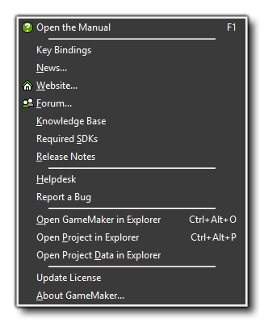
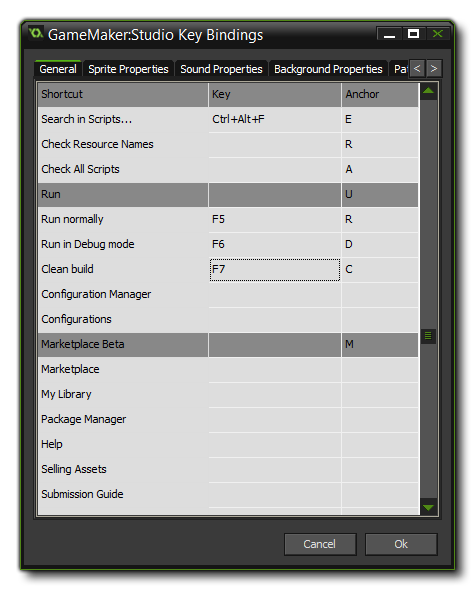
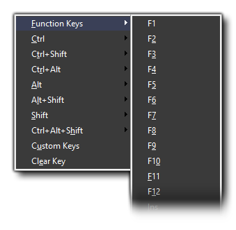
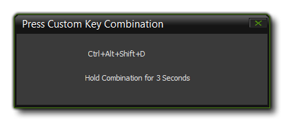

- Open The Manual: Use this command to bring up this help file.
- Key Bindings: This option opens the Key Binding Editor where you can redefine the GameMaker: Studio keyboard shortcuts. More information on this can be found below.
- News: Here you can see the most recent news about the GameMaker range of products and the company YoYo Games.
- Website: Connects you to the YoYo Games official website.
- Forum: This will connect you to the GameMaker Community (GMC) forum, where you can find help with any problem as well as tutorials, resources and much more all related to GameMaker: Studio.
- Knowledge Base: This will take you to the GameMaker Knowledge Base where you can find plenty of official information about the use of GameMaker products.
- Required SDKs: This will take you to the page on the GameMaker Knowledge Base where you can find updated SDK information for each of the available target platforms.
- Release Notes: Opens a tab in your browser to show the current build and accompanying release notes for your version of GameMaker: Studio.
- Helpdesk: This link will take you to the YoYo Games Helpdesk and Knowledge Base where you can find additional tutorials and FAQs, as well as ask questions about the product.
- Report A bug: While we make every effort to make sure GameMaker: Studio is bug free, in a program as large and complicated as this it is a nearly impossible task. So, if you find something you think is a bug, then please use this link and report it to us and we'll do our very best to fix it.
- Open GameMaker in Explorer: Use this command to open the folder location of GameMaker: Studio in Windows Explorer.
- Open Project in Explorer: Use this command to open the folder location of your current project in Windows Explorer.
- Open Project Data in Explorer: Use this command to open the local appdata folder location that your current project is using.
- Update Licence: if you have bought a new licence to upgrade GameMaker: Studio to a new version or to add a new target module, then you should select this option to activate it. Note that if you bought GameMaker: Studio through Steam this option will not be present.
- About GameMaker: Studio: Gives information about this version of GameMaker: Studio, including the product key and the user it's registered to.
Note that if you have any Sony console license or the Xbox One
licence as part of your GameMaker: Studio licence, then you will
also see an option here to install the appropriate SDK and module
resources.
The help Key Binding Editor permits you to re-assign the default GameMaker: Studio IDE keyboard shortcuts to those that you choose. When you open the editor you will be presented with the following window:  Along the top of the window are the tabs for each of the editors available, as well as a "General" tab for the main IDE keyboard shortcuts. Each tab is split into three parts:
- Shortcut: The name of the command to create a keyboard shortcut for.
- Key: The key (or key combination) to be assigned to the shortcut command. Note! Not all IDE commands permit a keyboard shortcut.
- Anchor: The Anchor letter in the IDE name for the keyboard shortcut. This is the letter that will be underlined in the IDE, meaning that you can also use the <ALT> key plus the underlined character key to call the command.
To change a Key, simply right-click on it and select the
key, or key combination, that you require from the lists presented
and your shortcut will be created.  Note that you can also create your own custom
bindings if those that are presented by default do not match what
you require by selecting the Custom Keys option. This will
open a window another window which will detect and show the keys
that you are currently pressing:  You need to hold the key combination for 3
seconds and then it will be added to the Key Bindings for that
command.